Attache Paket: 'dplyr'Die folgenden Objekte sind maskiert von 'package:stats':
filter, lagDie folgenden Objekte sind maskiert von 'package:base':
intersect, setdiff, setequal, unionCode
set.seed(1)Final Version
Loading some Packages for Better Presentation of Results
Attache Paket: 'dplyr'Die folgenden Objekte sind maskiert von 'package:stats':
filter, lagDie folgenden Objekte sind maskiert von 'package:base':
intersect, setdiff, setequal, unionset.seed(1)Initial Populations In line with the paper, a population is generated where the money is normally distributed with a mean of 100.
To save computation time, the number of agents is reduced from 5000 to 1500. Additionally, the population is sorted and assigned an ID to track them. Agents with small IDs receive the least money, while agents with large IDs have a lot of money.
nA = 1500 # number of Agents
ID = seq_len(nA) # ID of the Agents
M0pop = 100 # Mean amount of Money in the Start-Population
PopNorm <- data.frame( ID = ID,
Money= sort(rnorm(nA, mean = M0pop, sd = 0.2 * M0pop))
)Also in line with the paper, a second population is generated where all agents start with the same amount of money.
PopEqual <- data.frame( ID = ID,
Money = rep(M0pop, times = nA)
)To describe the distribution of money in the population, a function is defined to calculate the Gini coefficient.
The same is also implemented as a time function.
In line with the paper, a random distribution of money between two agents is defined.
Since it was suspected in the sketchbook that the reason for the outcome is the decreasing probability of meeting an agent with more or a lot of money, a function is defined here to calculate various probabilities:
Probability of winning money (probwin)
Probability of having more money than the current median in the population after the exchange (probmed)
Probability of having more money than the mean in the population after the exchange (probmean)
Summary (Sum) with minimum, maximum, median and mean for the given Money and the mention probabilities
Distribution (Dist) for the same values
calc_p_s <- function(VM) {
Dist <- data.frame(Money = VM,
probwin = 0,
probmed = 0,
probmean = 0
)
Sum <- data.frame(Money = c(min(Dist$Money),
max(Dist$Money),
median(Dist$Money),
mean(Dist$Money)
),
probwin = 0,
probmed = 0,
probmean = 0
)
rownames(Sum) <- c("min", "max", "med", "mean")
M_Med <- Sum["med", "Money"]
M_Mean <- Sum["mean", "Money"]
for(i in 1:nrow(Dist)) {
M_A <- Dist[i,"Money"]
M_oA <- Dist[c(-i),"Money"]
pwin <- M_oA*0
pmed <- M_oA*0
pmean <- M_oA*0
for(ii in 1:NROW(M_oA)) {
Pot <- max(M_A + M_oA[ii], 10e-8)
pwin[ii] <- 1-min(1, M_A/Pot)
pmed[ii] <- 1-min(1, M_Med/Pot)
pmean[ii] <- 1-min(1, M_Mean/Pot)
}
Dist[i,"probwin"] <- mean(pwin)
Dist[i,"probmed"] <- mean(pmed)
Dist[i,"probmean"] <- mean(pmean)
}
for (i in c("probwin","probmed","probmean")) {
Sum[[i]] = c(min(Dist[[i]]),
max(Dist[[i]]),
median(Dist[[i]]),
mean(Dist[[i]])
)
}
Output <- list(Sum = Sum, Dist = Dist)
return(Output)
}The same Function with matrix calculations, what is much faster!
calc_p <- function(VM, Detailed=FALSE) {
n <- length(VM)
ID <- seq(1:n)
MM <- matrix(rep(VM,times=n),n,n)
S <- (VM + t(MM))
S[S==0] <- 10e-6
pwin <- (1 - t(MM)/S)
diag(pwin) <- 0
pmed <- 1-(median(VM)/S)
pmed[pmed<0] <- 0
diag(pmed) <- 0
pmean <- 1-(mean(VM)/S)
pmean[pmean<0] <- 0
diag(pmean) <- 0
Dist <- data.frame(Money = VM,
probwin = colSums(pwin)/(n-1),
probmed = colSums(pmed)/(n-1),
probmean = colSums(pmean)/(n-1)
)
Sum <- data.frame(Money = c(min(Dist$Money),
max(Dist$Money),
median(Dist$Money),
mean(Dist$Money)),
probwin = c(min(Dist$probwin),
max(Dist$probwin),
median(Dist$probwin),
mean(Dist$probwin)),
probmed = c(min(Dist$probmed),
max(Dist$probmed),
median(Dist$probmed),
mean(Dist$probmed)),
probmean = c(min(Dist$probmean),
max(Dist$probmean),
median(Dist$probmean),
mean(Dist$probmean))
)
rownames(Sum) <- c("min", "max", "med", "mean")
Output <- list(Sum = Sum, Dist = Dist)
if (Detailed) {
D <- data.frame(t(pmed))
diag(D) <- colSums(pmed)/(n-1)
D <- round(D, digits=2)
D <- format(D, digits=2)
VMm <- round(median(VM), digits=1)
VMm <- format(VMm, digits=4)
VM <- round(VM, digits=1)
VM <- format(VM, digits=4)
D <- rbind(VM, D)
D <- cbind(c("Money",ID),c(VMm,VM), D)
colnames(D) <- c("ID","Money",ID)
D <- gt(D)
D <- tab_spanner(D, label = "Probabilities", columns = 3:(n+2))
for (i in 1:(n + 1)) {
if (i==1) {
D <- tab_style(D,
style = list(cell_text(style = "italic")),
locations = cells_body(i+1,))
D <- tab_style(D,
style = list(cell_text(style = "italic")),
locations = cells_body(,i))
}
D <- tab_style(D,
style = list(cell_text(weight = "bold")),
locations = cells_body(i+1, i))
}
D <- tab_source_note(
D,
source_note = "Italic/bold = Median of Money, Bold = Mean in the Population"
)
Output$SumD <- D
}
return(Output)
}The same is also implemented as a time function.
calc_p_t <- function(MM) {
pnt <- calc_p(MM[,1])
tx <- as.numeric(gsub("n", "",colnames(MM)[1]))
pnts <- data.frame(Time = rep(tx, times = 4),
Res = colnames(pnt$Sum),
t(pnt$Sum)
)
for(i in 2:ncol(MM)) {
pnt <- calc_p(MM[,i])
tx <- as.numeric(gsub("n", "",colnames(MM)[i]))
pnti <- data.frame(Time = rep(tx, times = 4),
Res = colnames(pnt$Sum),
t(pnt$Sum)
)
pnts <- rbind(pnts,pnti)
}
rownames(pnts) <- NULL
return(pnts)
}Finally, a simulation is created that simulates a certain number of money exchanges.
Number of exchanges
Startdistribition of Money
Steps for the timeline (optional)
Summary (Sum) with ID, number of exchanges, Money at beginning and Money at the End
Matrix with Money distribution(Timeline) for given time steps as vectors (if steps > 0)
ecosim <- function( n, VM, TL = 0 ) {
df <- data.frame(ID=seq(1,NROW(VM)),
nE=0,
MT_S=VM,
MT_E=VM
)
if (TL > 0) {
M_TL <- data.frame(n0 = df$MT_S)
}
for(i in 1:n) {
rdf <- sample(df$ID, size=2)
rds <- splitpair()
df[rdf,"nE"] <- df[rdf,"nE"] + 1
df[rdf,"MT_E"] <- sum( df[rdf,"MT_E"]) * rds
if ( TL > 0 ) {
if ( i %% TL == 0) {
M_TL [[paste0("n",i)]]<- df$MT_E
}
}
}
Output <- list("Sum" = df)
if ( TL > 0 ) {
rownames(M_TL) <- df$ID
Output$Timeline <- M_TL
}
return(Output)
}figHist <- function(Sim_Sum) {
Fig <- pivot_longer(data.frame(Sim_Sum),
cols = starts_with("MT"),
names_to = "Distribution",
values_to = "Money"
)
Fig$Distribution <-recode(Fig$Distribution,
"MT_S" = "at Begining",
"MT_E" = "at the End"
)
Figp <- ggplot(Fig, aes(x = Money, fill = Distribution)) +
geom_histogram(position = "identity", alpha = 0.5, bins = 50) +
ylab("Frequency") +
scale_fill_manual(name = NULL, values = c(4,3)) +
scale_color_manual(name = NULL, values = c(4, 3)) +
theme_minimal() +
theme(legend.position = "top")
return(Figp)
}Probability distribution from calc_p
Title for the figure
Maximum for the x axis (Money)
figProb <- function(Prob, Title, xmax) {
Figd <- pivot_longer(data.frame(Prob$Dist),
cols = starts_with("p"),
names_to = "Outcome",
values_to = "Probability"
)
Figs <- Prob$Sum
Figp <- ggplot(data = Figd,
aes(x = Money,
y = Probability,
color = Outcome
)
) +
geom_point( alpha = 0.5, size = 1.5) +
scale_color_manual(name = "Probability to",
values = c(2, 3, 4),
labels = c("gain more than the Mean",
"gain more than the Median",
"gain")
) +
ylim(0, 1) +
xlim(0, xmax) +
geom_vline(xintercept = Figs["med","Money"],
linetype = "solid", color = 1) +
annotate("text",
x = Figs["med","Money"] * 0.95,
y = 0,
hjust = 1,
vjust = 0,
label = paste("Median\n=",
round(Figs["med","Money"], 0)),
color = 1) +
geom_vline(xintercept = Figs["mean","Money"],
linetype = "dashed", color = 1) +
annotate("text",
x = Figs["mean","Money"] * 1.05,
y = 0,
hjust = 0,
vjust = 0,
label = paste("Mean\n=",
round(Figs["mean","Money"], 0)),
color = 1) +
geom_hline(yintercept = Figs["mean","probmed"],
linetype = "solid", color = 3) +
annotate("text",
x = xmax,
y = Figs["mean","probmed"] * 1.05,
hjust = 1,
vjust = 0,
label = paste("Mean =",
round(Figs["mean","probmed"], 2)),
color = 3) +
geom_hline(yintercept = Figs["mean","probmean"],
linetype = "solid", color = 2) +
annotate("text",
x = xmax,
y = Figs["mean","probmean"]*0.95,
hjust = 1,
vjust = 1,
label = paste("Mean =",
round(Figs["mean","probmean"], 2)),
color = 2) +
labs(title = Title) +
theme_light() +
theme(legend.position = "top",
legend.justification = c(0, 1))
return(Figp)
}Probability distribution from calc_p_t
Title for the figure
figProb_t <- function(Prob, Title) {
Fig <- Prob[Prob$Res!="Money",c("Time","Res","mean")]
Figp <- ggplot(data = Fig, aes(x = Time, y = mean, color = Res)) +
geom_line(linewidth = 1) +
scale_color_manual(name = NULL, values = c(2, 3, 4),
labels = c("gain more than the Mean",
"gain more than the Median",
"gain")) +
ggtitle(Title) +
xlab("number of exchanges") +
ylab("Mean-Probability in the Population") +
ylim(0.30, 0.6) +
theme_light() +
theme(legend.position = "top",
legend.justification = c(0, 1))
return(Figp)
}Simulation for 60000 exchanges with output after every 500th exchange.
sNorm <- ecosim(60000, PopNorm$Money, TL = 250)At the beginning, the distribution of money in the population looks like this. After simulating 60000 money exchanges, the following distribution emerges.
Fig01 <- figHist(sNorm$Sum)
Fig01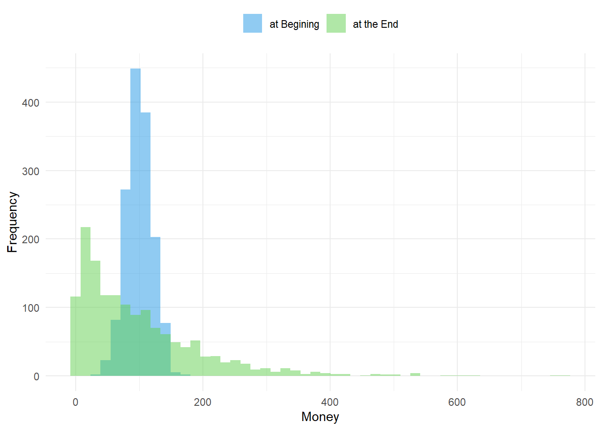
It seems that every agent has the chance to have a lot of money in the end. This can be shown by tracking individual agents and their money. Below, nine agents are shown: three with little, three with 100, and three with the most money at the beginning.
MTime <- data.frame(ID,sNorm$Timeline)
sID <- c(1,2,3,nA/2-1,nA/2,nA/2+1,nA-2,nA-1,nA)
sMTime <- MTime[sID,]
Fig02 <- pivot_longer(data.frame(sMTime),
cols = !matches("ID"),
names_to = "Time",
names_prefix = "n",
names_transform = list(Time = as.integer),
values_to = "Money"
)
Fig02$ID <- sprintf("%04d", Fig02$ID)
ggplot(data = Fig02, aes(x = Time, y = Money, color = ID)) +
geom_line() +
ggtitle("Timeline for some Agents") +
xlab("number of exchanges") +
labs(color = "Agents ID") +
scale_color_manual(values = c(2,2,2, 1,1, 1,3,3,3)) +
theme_light() +
theme(legend.position = "right",
legend.justification = c(0, 1))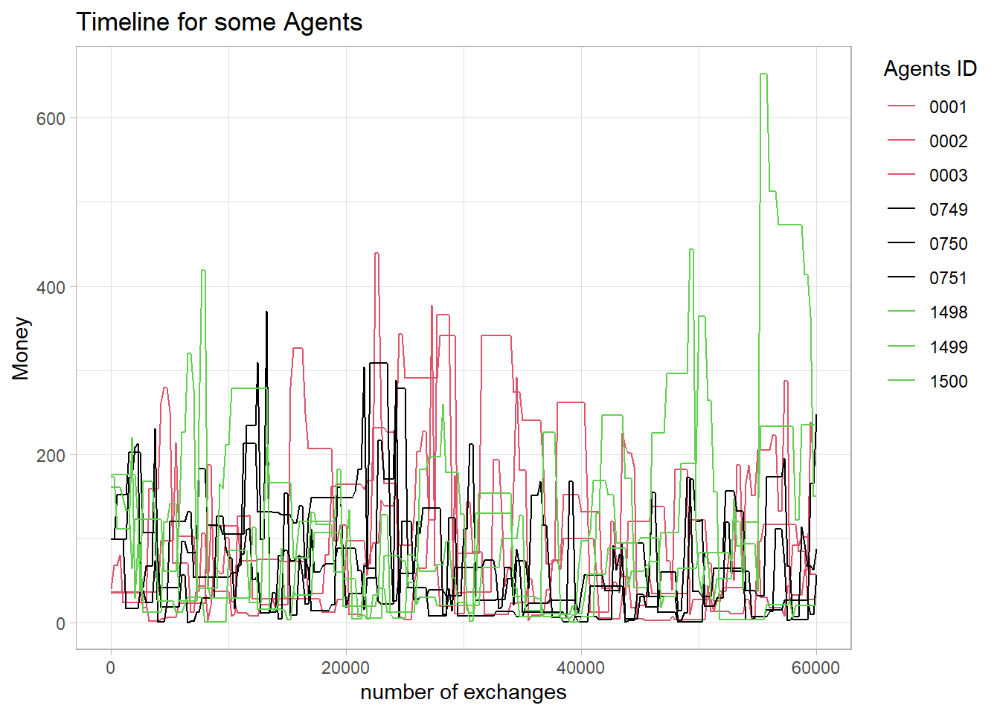
This can also be shown with the calculated probabilities for the next meeting for each agent.
Fig03 <- figProb(calc_p(sNorm$Timeline[,1]),
"Probability at Beginning", 850)
Fig04 <- figProb(calc_p(sNorm$Timeline[,3]),
"Probability after 500 exchanges", 850)
Fig05 <- figProb(calc_p(sNorm$Timeline[,5]),
"Probability after 1000 exchanges", 850)
Fig06 <- figProb(calc_p(sNorm$Timeline[,NCOL(sNorm$Timeline)]),
"Probability at the End", 850)Initially, it seems to be a fairly fair trade, so agents with little money have a higher probability of winning money in the next exchange. However, they also have a lower probability of ending up above the median or the mean. At the beginning, all probabilities in the population are about 0.5 on average.
Fig03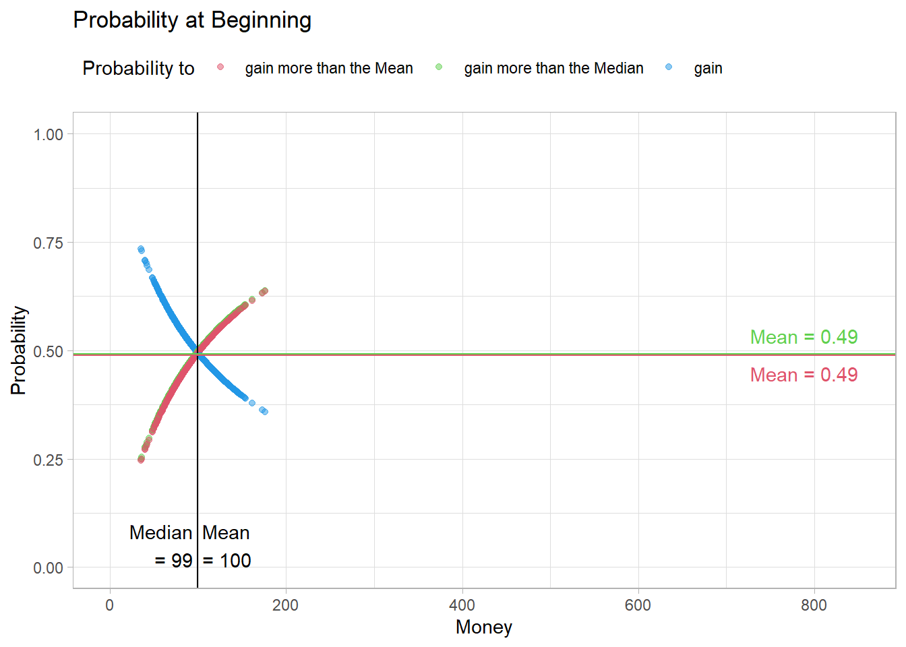
However, after a few meetings, this changes. The probability of ending up above the median or the mean decreases.
The reason for this is that with each exchange, a rich and a poor agent are created, which decreases the probability of meeting a rich agent in the future. As a result, the median amount of money decreases.
Fig04This effect intensifies over time.
Fig05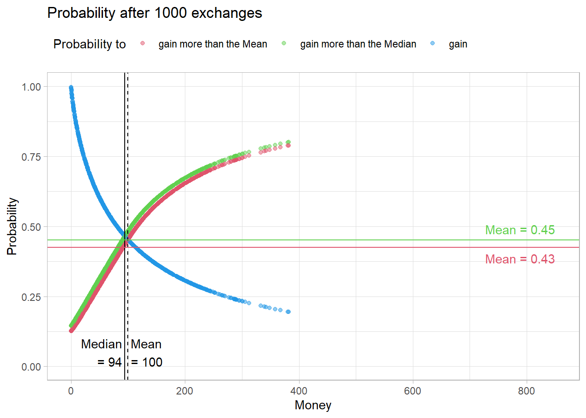
After 60000 meetings, the distribution of probabilities in the population looks like this.
Fig06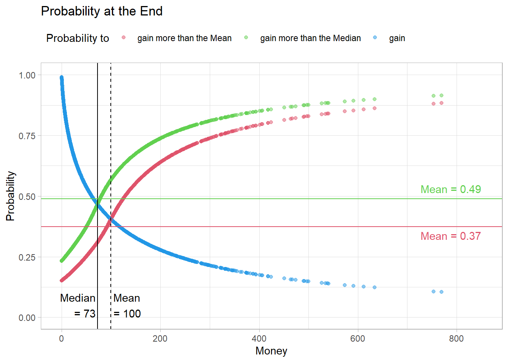
It seems that the probability of ending up above the median rises back to 0.5. However, the probability of ending up above the mean remains low.
ProbNormt <- calc_p_t(sNorm$Timeline)This can be seen even better when looking at the said probabilities over time.
Fig07 <-figProb_t(ProbNormt, "Probability to ... of Money - Timeline")
Fig07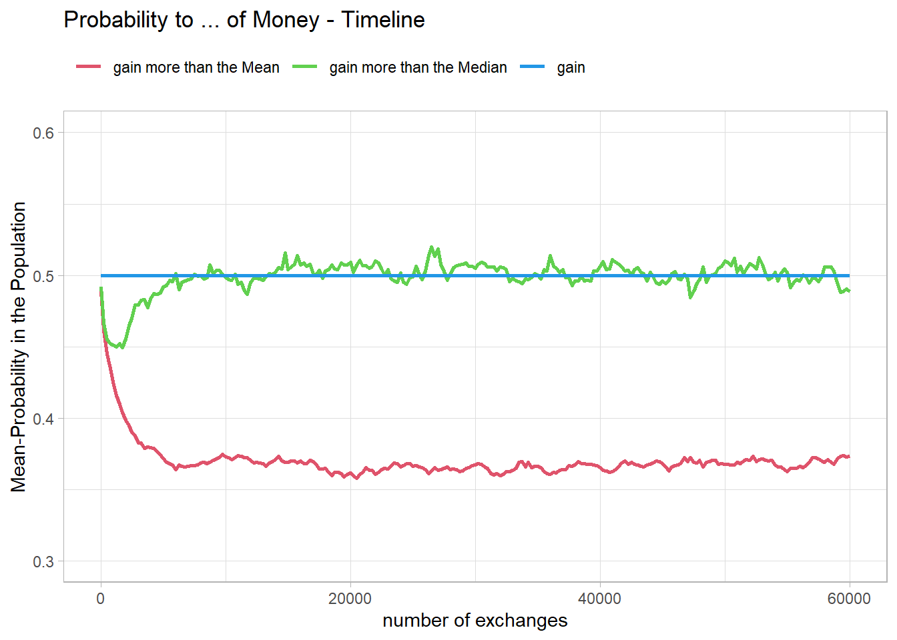
Simulation for 60000 exchanges with output after every 250th exchange.
eNorm <- ecosim(60000, PopEqual$Money, TL = 250)At first glance, it seems illogical that a population where everyone starts with the same amount of money would result in a similar final distribution of money. However, the simulation proves this.
Fig08 <- figHist(eNorm$Sum)
Fig08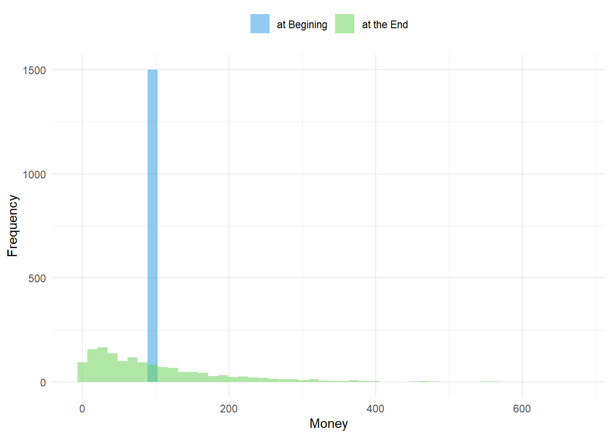
Fig09 <- figProb(calc_p(eNorm$Timeline[,1]),
"Probability at Beginning", 850)
Fig10 <- figProb(calc_p(eNorm$Timeline[,3]),
"Probability after 500 exchanges", 850)
Fig11 <- figProb(calc_p(eNorm$Timeline[,5]),
"Probability after 1000 exchanges", 850)
Fig12 <- figProb(calc_p(eNorm$Timeline[,NCOL(eNorm$Timeline)]),
"Probability at the End", 850)At the beginning, all probabilities are exactly 0.5.
Fig09However, the same mechanism applies here. With each exchange, a rich and a poor agent are created.
Fig10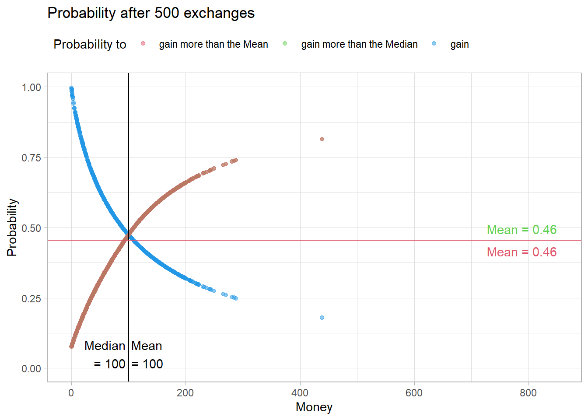
Therefore, the probability of meeting a rich agent in the future also decreases here. As a result, the probability of ending up above the median or the mean decreases here as well.
Fig11
After 50000 meetings, the distribution of probabilities in this population looks almost identical.
Fig12This is even more evident over time.
ProbEqualt <- calc_p_t(eNorm$Timeline)However, it seems that the median amount of money remains stable a bit longer.
Fig13 <- figProb_t(ProbEqualt, "Probability to ... of Money - Timeline")
Fig13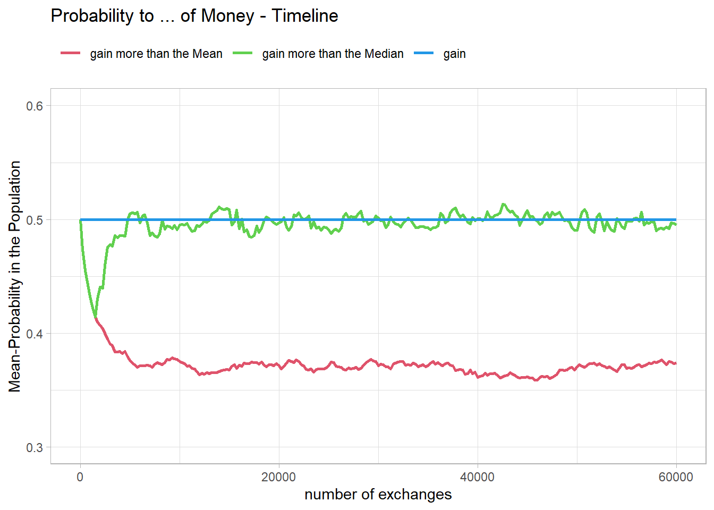
To better compare the two populations, two new simulations are conducted. The number is restricted to the interesting initial range, and the time resolution is increased.
sNorms <- ecosim(8000, PopNorm$Money, TL = 50)
ProbNormts <- calc_p_t(sNorms$Timeline)
eNorms <- ecosim(8000, PopEqual$Money, TL = 50)
ProbEqualts <- calc_p_t(eNorms$Timeline)Fig14 <- figProb_t(ProbNormts,
"Probability to ... of Money\nTimeline for the Norm Population")
Fig15 <- figProb_t(ProbEqualts,
"Probability to ... of Money\nTimeline for a equal Population")It actually shows that in the population with the normal distribution, the probabilities for the median and the mean separate earlier.
Fig14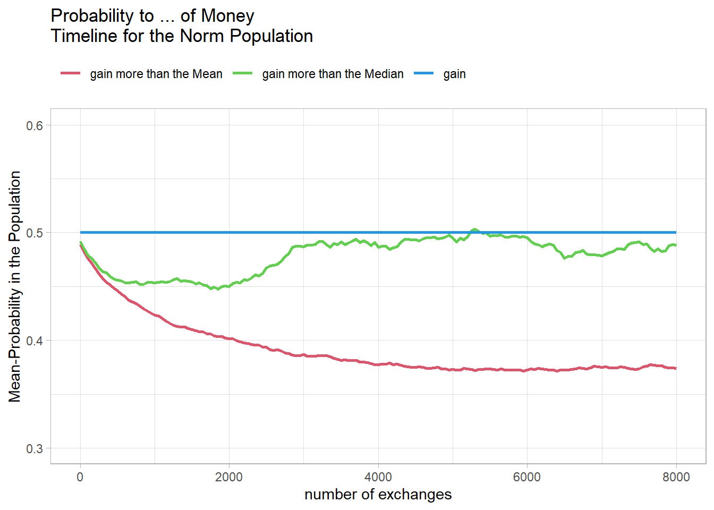
In the population with the same initial amount of money, the two lines remain very close together, meaning that the median and mean amounts of money remain almost identical.
Fig15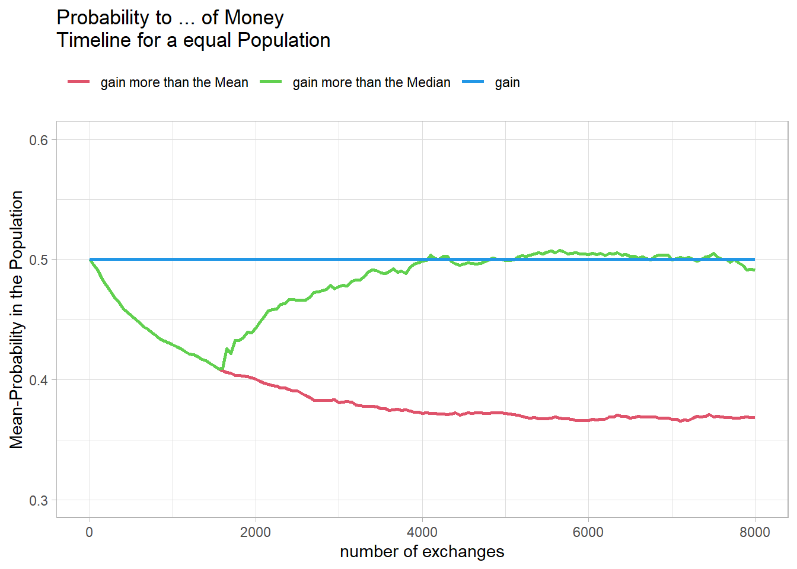
This makes sense because the meetings are random, and therefore some agents keep their starting balance of 100 longer. After 1500 meetings, or about two meetings per agent, this becomes increasingly unlikely.
Since I have not yet used the Gini coefficient described in the article, it is now plotted over time for the two populations.
Fig16 <- data.frame( Time = ProbNormts[ProbNormts$Res == "Money",c("Time")],
Norm = gini_t(sNorms$Timeline),
Equal = gini_t(eNorms$Timeline)
)
Fig16 <- pivot_longer(data.frame(Fig16),
cols = !matches("Time"),
names_to = "Pop",
values_to = "Gini"
)
Fig16p <- ggplot(data = Fig16, aes(x = Time, y = Gini, color = Pop)) +
geom_line(linewidth = 1) +
scale_color_manual(name = "Start Population", values = c(2, 1)) +
ggtitle("Gini-Faktor - Timeline") +
xlab("number of exchanges") +
ylab("Gini") +
theme_light() +
theme(legend.position = "top",
legend.justification = c(0, 1))
Fig16p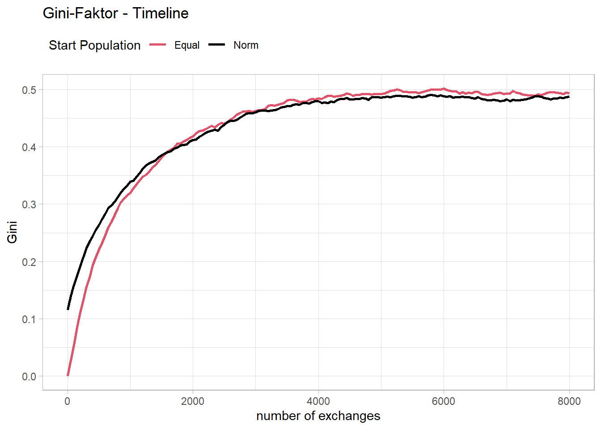
It seems that the course is quite similar to the course of the probability of ending up above the mean of the distribution. A closer look shows that the reciprocal of the Gini coefficient matches quite well with the probability of ending up above the mean of the distribution.
Fig17 <- data.frame( Time = ProbNormts[ProbNormts$Res == "Money",c("Time")],
GNorm = (1-Fig16[Fig16$Pop == "Norm","Gini"]),
PNorm = ProbNormts[ProbNormts$Res == "probmean",c("mean")],
GEqual = 1-Fig16[Fig16$Pop == "Equal","Gini"],
PEqual = ProbEqualts[ProbEqualts$Res == "probmean",c("mean")]
)
colnames(Fig17) <- c("Time", "GNorm", "PNorm", "GEqual", "PEqual")
Fig17$Faktn <- Fig17$GNorm/Fig17$PNorm
Fig17$Fakte <- Fig17$GEqual/Fig17$PEqual
Fig17 <- pivot_longer(data.frame(Fig17),
cols = starts_with("F"),
names_to = "Pop",
values_to = "Fakt"
)
Fig17p <- ggplot(data = Fig17,
aes(x = Time, y = Fakt, color = Pop, linetype = Pop)) +
geom_line(linewidth = 1) +
scale_color_manual(name = "Start Population",
values = c(2, 1),
labels = c("Equal", "Norm")) +
scale_linetype_manual("Start Population",
values = c("solid", "dashed"),
labels = c("Equal", "Norm")) +
ggtitle("Relation between\n
Probability to gain more than the Mean\n
and (1-Gini) - Timeline") +
xlab("number of exchanges") +
ylab("Faktor") +
theme_light() +
theme(legend.position = "top",
legend.justification = c(0, 1))
Fig17p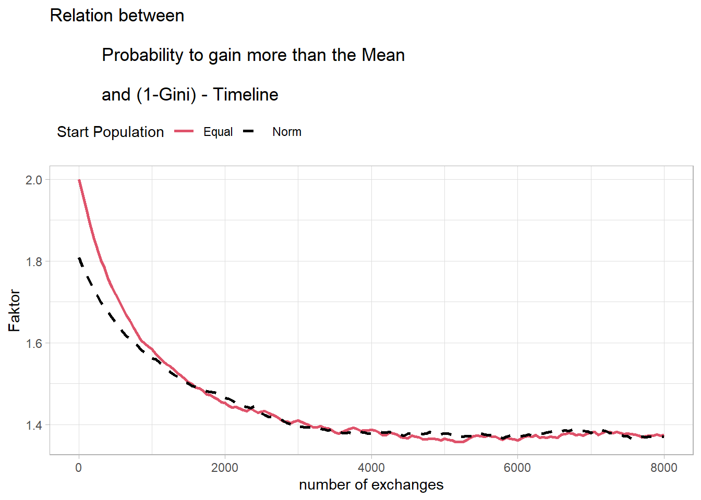
This could potentially allow for the development of a mathematical model for this mechanism. However, this exceeds my abilities and will be left to more capable individuals.
| ID | Money |
Probabilities
|
|||||||||
|---|---|---|---|---|---|---|---|---|---|---|---|
| 1 | 2 | 3 | 4 | 5 | 6 | 7 | 8 | 9 | 10 | ||
| Money | 100 | 100 | 100 | 100 | 100 | 100 | 100 | 100 | 100 | 100 | 100 |
| 1 | 100 | 0.5 | 0.5 | 0.5 | 0.5 | 0.5 | 0.5 | 0.5 | 0.5 | 0.5 | 0.5 |
| 2 | 100 | 0.5 | 0.5 | 0.5 | 0.5 | 0.5 | 0.5 | 0.5 | 0.5 | 0.5 | 0.5 |
| 3 | 100 | 0.5 | 0.5 | 0.5 | 0.5 | 0.5 | 0.5 | 0.5 | 0.5 | 0.5 | 0.5 |
| 4 | 100 | 0.5 | 0.5 | 0.5 | 0.5 | 0.5 | 0.5 | 0.5 | 0.5 | 0.5 | 0.5 |
| 5 | 100 | 0.5 | 0.5 | 0.5 | 0.5 | 0.5 | 0.5 | 0.5 | 0.5 | 0.5 | 0.5 |
| 6 | 100 | 0.5 | 0.5 | 0.5 | 0.5 | 0.5 | 0.5 | 0.5 | 0.5 | 0.5 | 0.5 |
| 7 | 100 | 0.5 | 0.5 | 0.5 | 0.5 | 0.5 | 0.5 | 0.5 | 0.5 | 0.5 | 0.5 |
| 8 | 100 | 0.5 | 0.5 | 0.5 | 0.5 | 0.5 | 0.5 | 0.5 | 0.5 | 0.5 | 0.5 |
| 9 | 100 | 0.5 | 0.5 | 0.5 | 0.5 | 0.5 | 0.5 | 0.5 | 0.5 | 0.5 | 0.5 |
| 10 | 100 | 0.5 | 0.5 | 0.5 | 0.5 | 0.5 | 0.5 | 0.5 | 0.5 | 0.5 | 0.5 |
| Italic/bold = Median of Money, Bold = Mean in the Population | |||||||||||
| ID | Money |
Probabilities
|
|||||||||
|---|---|---|---|---|---|---|---|---|---|---|---|
| 1 | 2 | 3 | 4 | 5 | 6 | 7 | 8 | 9 | 10 | ||
| Money | 100 | 100.0 | 100.0 | 100.0 | 100.0 | 33.6 | 166.4 | 100.0 | 100.0 | 100.0 | 100.0 |
| 1 | 100.0 | 0.49 | 0.50 | 0.50 | 0.50 | 0.25 | 0.62 | 0.50 | 0.50 | 0.50 | 0.50 |
| 2 | 100.0 | 0.50 | 0.49 | 0.50 | 0.50 | 0.25 | 0.62 | 0.50 | 0.50 | 0.50 | 0.50 |
| 3 | 100.0 | 0.50 | 0.50 | 0.49 | 0.50 | 0.25 | 0.62 | 0.50 | 0.50 | 0.50 | 0.50 |
| 4 | 100.0 | 0.50 | 0.50 | 0.50 | 0.49 | 0.25 | 0.62 | 0.50 | 0.50 | 0.50 | 0.50 |
| 5 | 33.6 | 0.25 | 0.25 | 0.25 | 0.25 | 0.28 | 0.50 | 0.25 | 0.25 | 0.25 | 0.25 |
| 6 | 166.4 | 0.62 | 0.62 | 0.62 | 0.62 | 0.50 | 0.61 | 0.62 | 0.62 | 0.62 | 0.62 |
| 7 | 100.0 | 0.50 | 0.50 | 0.50 | 0.50 | 0.25 | 0.62 | 0.49 | 0.50 | 0.50 | 0.50 |
| 8 | 100.0 | 0.50 | 0.50 | 0.50 | 0.50 | 0.25 | 0.62 | 0.50 | 0.49 | 0.50 | 0.50 |
| 9 | 100.0 | 0.50 | 0.50 | 0.50 | 0.50 | 0.25 | 0.62 | 0.50 | 0.50 | 0.49 | 0.50 |
| 10 | 100.0 | 0.50 | 0.50 | 0.50 | 0.50 | 0.25 | 0.62 | 0.50 | 0.50 | 0.50 | 0.49 |
| Italic/bold = Median of Money, Bold = Mean in the Population | |||||||||||
| ID | Money |
Probabilities
|
|||||||||
|---|---|---|---|---|---|---|---|---|---|---|---|
| 1 | 2 | 3 | 4 | 5 | 6 | 7 | 8 | 9 | 10 | ||
| Money | 100 | 196.6 | 40.6 | 64.2 | 100.0 | 33.6 | 190.9 | 136.3 | 130.4 | 7.4 | 100.0 |
| 1 | 196.6 | 0.64 | 0.58 | 0.62 | 0.66 | 0.57 | 0.74 | 0.70 | 0.69 | 0.51 | 0.66 |
| 2 | 40.6 | 0.58 | 0.29 | 0.05 | 0.29 | 0.00 | 0.57 | 0.43 | 0.42 | 0.00 | 0.29 |
| 3 | 64.2 | 0.62 | 0.05 | 0.34 | 0.39 | 0.00 | 0.61 | 0.50 | 0.49 | 0.00 | 0.39 |
| 4 | 100.0 | 0.66 | 0.29 | 0.39 | 0.44 | 0.25 | 0.66 | 0.58 | 0.57 | 0.07 | 0.50 |
| 5 | 33.6 | 0.57 | 0.00 | 0.00 | 0.25 | 0.27 | 0.55 | 0.41 | 0.39 | 0.00 | 0.25 |
| 6 | 190.9 | 0.74 | 0.57 | 0.61 | 0.66 | 0.55 | 0.63 | 0.69 | 0.69 | 0.50 | 0.66 |
| 7 | 136.3 | 0.70 | 0.43 | 0.50 | 0.58 | 0.41 | 0.69 | 0.54 | 0.63 | 0.30 | 0.58 |
| 8 | 130.4 | 0.69 | 0.42 | 0.49 | 0.57 | 0.39 | 0.69 | 0.63 | 0.52 | 0.27 | 0.57 |
| 9 | 7.4 | 0.51 | 0.00 | 0.00 | 0.07 | 0.00 | 0.50 | 0.30 | 0.27 | 0.19 | 0.07 |
| 10 | 100.0 | 0.66 | 0.29 | 0.39 | 0.50 | 0.25 | 0.66 | 0.58 | 0.57 | 0.07 | 0.44 |
| Italic/bold = Median of Money, Bold = Mean in the Population | |||||||||||
| ID | Money |
Probabilities
|
|||||||||
|---|---|---|---|---|---|---|---|---|---|---|---|
| 1 | 2 | 3 | 4 | 5 | 6 | 7 | 8 | 9 | 10 | ||
| Money | 82.1 | 196.6 | 40.6 | 64.2 | 235.7 | 33.6 | 55.2 | 136.3 | 130.4 | 7.4 | 100.0 |
| 1 | 196.6 | 0.70 | 0.65 | 0.69 | 0.81 | 0.64 | 0.67 | 0.75 | 0.75 | 0.60 | 0.72 |
| 2 | 40.6 | 0.65 | 0.35 | 0.22 | 0.70 | 0.00 | 0.14 | 0.54 | 0.52 | 0.00 | 0.42 |
| 3 | 64.2 | 0.69 | 0.22 | 0.42 | 0.73 | 0.16 | 0.31 | 0.59 | 0.58 | 0.00 | 0.50 |
| 4 | 235.7 | 0.81 | 0.70 | 0.73 | 0.74 | 0.70 | 0.72 | 0.78 | 0.78 | 0.66 | 0.76 |
| 5 | 33.6 | 0.64 | 0.00 | 0.16 | 0.70 | 0.33 | 0.08 | 0.52 | 0.50 | 0.00 | 0.39 |
| 6 | 55.2 | 0.67 | 0.14 | 0.31 | 0.72 | 0.08 | 0.39 | 0.57 | 0.56 | 0.00 | 0.47 |
| 7 | 136.3 | 0.75 | 0.54 | 0.59 | 0.78 | 0.52 | 0.57 | 0.61 | 0.69 | 0.43 | 0.65 |
| 8 | 130.4 | 0.75 | 0.52 | 0.58 | 0.78 | 0.50 | 0.56 | 0.69 | 0.60 | 0.40 | 0.64 |
| 9 | 7.4 | 0.60 | 0.00 | 0.00 | 0.66 | 0.00 | 0.00 | 0.43 | 0.40 | 0.26 | 0.24 |
| 10 | 100.0 | 0.72 | 0.42 | 0.50 | 0.76 | 0.39 | 0.47 | 0.65 | 0.64 | 0.24 | 0.53 |
| Italic/bold = Median of Money, Bold = Mean in the Population | |||||||||||
| ID | Money |
Probabilities
|
|||||||||
|---|---|---|---|---|---|---|---|---|---|---|---|
| 1 | 2 | 3 | 4 | 5 | 6 | 7 | 8 | 9 | 10 | ||
| Money | 82.1 | 196.6 | 40.6 | 64.2 | 235.7 | 33.6 | 3.4 | 136.3 | 182.2 | 7.4 | 100.0 |
| 1 | 196.6 | 0.69 | 0.65 | 0.69 | 0.81 | 0.64 | 0.59 | 0.75 | 0.78 | 0.60 | 0.72 |
| 2 | 40.6 | 0.65 | 0.35 | 0.22 | 0.70 | 0.00 | 0.00 | 0.54 | 0.63 | 0.00 | 0.42 |
| 3 | 64.2 | 0.69 | 0.22 | 0.39 | 0.73 | 0.16 | 0.00 | 0.59 | 0.67 | 0.00 | 0.50 |
| 4 | 235.7 | 0.81 | 0.70 | 0.73 | 0.73 | 0.70 | 0.66 | 0.78 | 0.80 | 0.66 | 0.76 |
| 5 | 33.6 | 0.64 | 0.00 | 0.16 | 0.70 | 0.34 | 0.00 | 0.52 | 0.62 | 0.00 | 0.39 |
| 6 | 3.4 | 0.59 | 0.00 | 0.00 | 0.66 | 0.00 | 0.27 | 0.41 | 0.56 | 0.00 | 0.21 |
| 7 | 136.3 | 0.75 | 0.54 | 0.59 | 0.78 | 0.52 | 0.41 | 0.60 | 0.74 | 0.43 | 0.65 |
| 8 | 182.2 | 0.78 | 0.63 | 0.67 | 0.80 | 0.62 | 0.56 | 0.74 | 0.68 | 0.57 | 0.71 |
| 9 | 7.4 | 0.60 | 0.00 | 0.00 | 0.66 | 0.00 | 0.00 | 0.43 | 0.57 | 0.28 | 0.24 |
| 10 | 100.0 | 0.72 | 0.42 | 0.50 | 0.76 | 0.39 | 0.21 | 0.65 | 0.71 | 0.24 | 0.51 |
| Italic/bold = Median of Money, Bold = Mean in the Population | |||||||||||
| ID | Money |
Probabilities
|
|||||||||
|---|---|---|---|---|---|---|---|---|---|---|---|
| 1 | 2 | 3 | 4 | 5 | 6 | 7 | 8 | 9 | 10 | ||
| Money | 68.9 | 71.5 | 95.7 | 23.0 | 5.7 | 121.4 | 10.6 | 66.3 | 7.6 | 347.9 | 250.4 |
| 1 | 71.5 | 0.45 | 0.59 | 0.27 | 0.11 | 0.64 | 0.16 | 0.50 | 0.13 | 0.84 | 0.79 |
| 2 | 95.7 | 0.59 | 0.55 | 0.42 | 0.32 | 0.68 | 0.35 | 0.57 | 0.33 | 0.84 | 0.80 |
| 3 | 23.0 | 0.27 | 0.42 | 0.33 | 0.00 | 0.52 | 0.00 | 0.23 | 0.00 | 0.81 | 0.75 |
| 4 | 5.7 | 0.11 | 0.32 | 0.00 | 0.27 | 0.46 | 0.00 | 0.04 | 0.00 | 0.81 | 0.73 |
| 5 | 121.4 | 0.64 | 0.68 | 0.52 | 0.46 | 0.62 | 0.48 | 0.63 | 0.47 | 0.85 | 0.81 |
| 6 | 10.6 | 0.16 | 0.35 | 0.00 | 0.00 | 0.48 | 0.29 | 0.10 | 0.00 | 0.81 | 0.74 |
| 7 | 66.3 | 0.50 | 0.57 | 0.23 | 0.04 | 0.63 | 0.10 | 0.42 | 0.07 | 0.83 | 0.78 |
| 8 | 7.6 | 0.13 | 0.33 | 0.00 | 0.00 | 0.47 | 0.00 | 0.07 | 0.28 | 0.81 | 0.73 |
| 9 | 347.9 | 0.84 | 0.84 | 0.81 | 0.81 | 0.85 | 0.81 | 0.83 | 0.81 | 0.83 | 0.88 |
| 10 | 250.4 | 0.79 | 0.80 | 0.75 | 0.73 | 0.81 | 0.74 | 0.78 | 0.73 | 0.88 | 0.78 |
| Italic/bold = Median of Money, Bold = Mean in the Population | |||||||||||